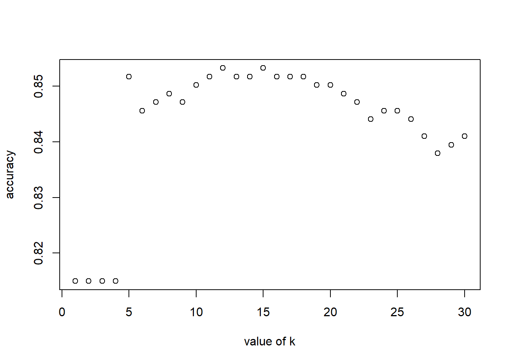

In this exercise, I will apply classification models (support vector machine and k nearest neighbour) to make predictions on successful credit card applications. The dataset is obtained from the “Credit Approval Data Set” from the UCI Machine Learning Repository (https://archive.ics.uci.edu/ml/datasets/Credit+Approval) without the categorical variables and without data points that have missing values.
The dataset has 654 data points, 6 continuous and 4 binary predictor variables. The last column is a binary response variable indicating if the application was positive or negative.
First step is to load the dataset and check out the first few rows of the data. The last column R1 is the binary response variable.
data <- read.table('credit_card_data-headers.txt',header=TRUE)
head(data)## A1 A2 A3 A8 A9 A10 A11 A12 A14 A15 R1
## 1 1 30.83 0.000 1.25 1 0 1 1 202 0 1
## 2 0 58.67 4.460 3.04 1 0 6 1 43 560 1
## 3 0 24.50 0.500 1.50 1 1 0 1 280 824 1
## 4 1 27.83 1.540 3.75 1 0 5 0 100 3 1
## 5 1 20.17 5.625 1.71 1 1 0 1 120 0 1
## 6 1 32.08 4.000 2.50 1 1 0 0 360 0 1Loading libraries that will be used.
library(kernlab)
library(kknn)In this part, we will use the support vector machine function (ksvm) contained in the R package kernlab to find a good classifier for this data. We will also try other non-linear kernels besides vanilladot to try to find one that may provide better predictions.
Fitting our SVM classifier to the credit card dataset using ksvm. ksvm requires the inputs to be a data matrix and factor, so the as.matrix and as.factor functions need to be applied.
Here, I will try three different kernel functions, namely vanilladot, rbfdot, and polydot. The performance of each model will be compared.
set.seed(1)
# vanilladot
ksvm_model_vanilladot <- ksvm(x=as.matrix(data[,1:10]),as.factor(data[,11]), type = 'C-svc',kernel = 'vanilladot',C = 100,scaled = TRUE)## Setting default kernel parametersksvm_model_vanilladot## Support Vector Machine object of class "ksvm"
##
## SV type: C-svc (classification)
## parameter : cost C = 100
##
## Linear (vanilla) kernel function.
##
## Number of Support Vectors : 189
##
## Objective Function Value : -17887.92
## Training error : 0.136086# polydot
ksvm_model_polydot <- ksvm(x=as.matrix(data[,1:10]),as.factor(data[,11]), type = 'C-svc',kernel = 'polydot',C = 100,scaled = TRUE)## Setting default kernel parametersksvm_model_polydot## Support Vector Machine object of class "ksvm"
##
## SV type: C-svc (classification)
## parameter : cost C = 100
##
## Polynomial kernel function.
## Hyperparameters : degree = 1 scale = 1 offset = 1
##
## Number of Support Vectors : 190
##
## Objective Function Value : -17887.98
## Training error : 0.136086# rbfdot
ksvm_model_rbfdot <- ksvm(x=as.matrix(data[,1:10]),as.factor(data[,11]), type = 'C-svc',kernel = 'rbfdot',C = 100,scaled = TRUE)
ksvm_model_rbfdot## Support Vector Machine object of class "ksvm"
##
## SV type: C-svc (classification)
## parameter : cost C = 100
##
## Gaussian Radial Basis kernel function.
## Hyperparameter : sigma = 0.0917879768914306
##
## Number of Support Vectors : 244
##
## Objective Function Value : -9139.119
## Training error : 0.047401After running the above, it is found that using rbfdot kernel returns the lowest training error.
I will generate predictions of each model using the predict function, and check what fraction of each model’s predictions match the actual classification.
preds_vanilladot <- predict(ksvm_model_vanilladot,data[,1:10])
preds_polydot <- predict(ksvm_model_polydot,data[,1:10])
preds_rbfdot <- predict(ksvm_model_rbfdot,data[,1:10])
# check what fraction of the model's predictions match the actual classification
sum(preds_vanilladot==data[,11]) / nrow(data)## [1] 0.8639144sum(preds_polydot==data[,11]) / nrow(data)## [1] 0.8639144sum(preds_rbfdot==data[,11]) / nrow(data)## [1] 0.9525994Using rbfdot kernel also returns the highest accuracy as 95% of the predictions match the actual classification.
We shall use the rbfdot model as the chosen kernel.
Let’s now experiment with different values of C:
j <- 0
C_value <- c(0.01,0.1,1,10,100,1000,10000)
C_results <- rep(0,7)
for (i in C_value){
j<-j+1
ksvm_model <- ksvm(x=as.matrix(data[,1:10]),as.factor(data[,11]), type = 'C-svc',kernel = 'rbfdot',C = i,scaled = TRUE)
# check what fraction of the model's predictions match the actual classification
preds <- predict(ksvm_model,data[,1:10])
accuracy <- sum(preds==data[,11]) / nrow(data)
C_results[j] <- accuracy
}
data.frame(C_value,C_results)## C_value C_results
## 1 1e-02 0.5626911
## 2 1e-01 0.8593272
## 3 1e+00 0.8700306
## 4 1e+01 0.9159021
## 5 1e+02 0.9525994
## 6 1e+03 0.9847095
## 7 1e+04 0.9954128Based on the results, I would choose C=100 as it returns about 95% accuracy on the dataset. C=1000 and C=10000 provides very high accuracy of >98% but the danger is overfitting to this model, as it is a nonlinear kernel.
Now, let’s work out the equation for the classifier. As the ksvm model does not directly return the coefficients, use xmatrix and coef (attributes of the model) to calculate the coefficients.
The goal is to obtain the weight of each of the 10 attributes from our data, so that the classifier will be a1x1 + a2x2…+a0 = 0
ksvm_model <- ksvm(x=as.matrix(data[,1:10]),as.factor(data[,11]), type = 'C-svc',kernel = 'rbfdot',C = 100,scaled = TRUE)
# calculate a1...am
a <- colSums(ksvm_model@xmatrix[[1]] * ksvm_model@coef[[1]])
# calculate a0
a0 <- -ksvm_model@b
a## A1 A2 A3 A8 A9 A10 A11
## -18.941751 -38.104327 -8.731618 56.508520 49.863090 -23.631961 13.816172
## A12 A14 A15
## -23.719192 -58.516918 50.799925a0## [1] 0.8114676Based on the above, the equation will be (-18.94)A1 + (-38.1)A2 + (-8.73)A3 + (56.51)A8 + (49.86)A9 + (-23.63)A10 + (13.82)A11 + (-23.72)A12 + (-58.52)A14 + (50.8)A15 + 0.81 = 0
The next part is to use kknn as the classification model. This is different from SVM as the methodology for KNN is to determine the k nearest neighbours to the target instance. In this context, k refers to the number of nearest neighbours to use in the model.
library(kknn)To know the accuracy for each value of k, the knn model needs to be created for each data point sequentially. At the end, we can then record the accuracy when comparing with the actual classification.
set.seed(1)
predict <- rep(0,nrow(data))
accuracy <- rep(0,30)
for (kval in 1:30){
for (i in 1:nrow(data)){
knn_model <- kknn(R1~.,data[-i,],data[i,],k=kval,scale=TRUE)
# R1~. is a formula object, meaning to use all other variables than 'R1' as predictors to predict R1
predict[i] <- floor(predict(knn_model)+0.5)
}
accuracy[kval] <- sum(predict == data[,11]) / nrow(data)
}Using the plot of accuracy against k value, we can see which value of k gives the highest accuracy.
Based on the plot below, we can see that k=12 and k=15 gives the highest accuracy.
plot(accuracy,xlab = 'value of k')
# k value at which accuracy is highest
kval <- which.max(accuracy)
maxaccurate <- round(max(accuracy)*100 , digits=2)We can use k = 12 and it classifies the data points in the full dataset to 85.32% accuracy.
To improve the model, we can also use train.knn to perform leave-one-out crossvalidation. First run some code to randomly select one third of the dataset to be the test set.
sample_size <- floor(nrow(data)/3)
sample_set <- sample(1:nrow(data), sample_size, replace = FALSE, prob = NULL)
# selecting the non sample data points as the train set
train_set <- data[-sample_set,]
# selecting the sample data points as the test set
test_set <- data[sample_set,]Next, let’s train using train.kknn to find the optimal value of k.
knn_model_train <- train.kknn(R1~., data = train_set, kmax = 50, kernel=c("optimal","rectangular", "inv", "gaussian", "triangular"), scale = TRUE)
knn_model_train##
## Call:
## train.kknn(formula = R1 ~ ., data = train_set, kmax = 50, kernel = c("optimal", "rectangular", "inv", "gaussian", "triangular"), scale = TRUE)
##
## Type of response variable: continuous
## minimal mean absolute error: 0.2103641
## Minimal mean squared error: 0.1104383
## Best kernel: rectangular
## Best k: 15Let’s check the performance on the test set:
predict_frac <- predict(knn_model_train,test_set)
# convert the fraction to 0 or 1
predict_test <- floor(predict_frac + 0.5)
predict_accuracy <- sum(predict_test == test_set[,11]) / nrow(test_set)
predict_accuracy <- round(predict_accuracy*100,digit=2)The predicted accuracy is 83.03%.
We can also have more details on the predictions by using a confusion matrix.
table(predict_test,test_set[,11])##
## predict_test 0 1
## 0 96 13
## 1 24 85Another approach is to split the data into 3 sets - training, validation, and test data sets. For this particular dataset, I will not randomly split but use the rotation method (i.e. sequentially allocate each data point into train validation or test set).
This is because when observing the dataset earlier, the data was organised such that the first part of the dataset had response variable of 1 and the second part had response variable of 0. Due to this grouping, we probably should try the rotation method to prevent over-representing either response in our split datasets.
Training set - build the model Validation set - picking a model Test set - estimate performance of model
validation <- seq(2,nrow(data),5)
validation_set <- data[validation,]
test <- seq(4,nrow(data),5)
test_set <- data[test,]
train1 <- seq(1,nrow(data),5)
train3 <- seq(3,nrow(data),5)
train5 <- seq(5,nrow(data),5)
train <- c(train1,train3,train5)
train_set <- data[train,]I will train on both SVM and KNN models.
set.seed(1)
ksvm_model_part3 <- ksvm(x=as.matrix(train_set[,1:10]),as.factor(train_set[,11]), type = 'C-svc',kernel = 'rbfdot',C = 100,scaled = TRUE)
preds_ksvm_train <- predict(ksvm_model_part3,train_set[,1:10])
accuracy_ksvm_train <- sum(preds_ksvm_train==train_set[,11]) / nrow(train_set)The accuracy on the training set is 96%.
preds_ksvm_val <- predict(ksvm_model_part3,validation_set[,1:10])
accuracy_ksvm_val <- sum(preds_ksvm_val==validation_set[,11]) / nrow(validation_set)The accuracy on the validation set is 82%. The lowered accuracy is expected behaviour as this is a set of data that the model has yet to “see”.
set.seed(1)
knn_model_part3 <- kknn(R1~.,train_set,validation_set,k=12,scale=TRUE)
predicted_knn_part3 <- floor(predict(knn_model_part3)+0.5)
accuracy_knn_part3 <- sum(predicted_knn_part3 == validation_set[,11]) / nrow(validation_set)For the KNN model, after using the training set to train the model, the accuracy of the validation set is 84%.
Therefore, accuracy of validation set: KSVM model: 82% KNN model: 84%
We will select the KNN model as it performs better on the validation set. For the final evaluation of the effectiveness, the test set accuracy will be used.
final_model_part3 <- kknn(R1~.,train_set,test_set,k=12,scale=TRUE)
final_pred_part3 <- floor(predict(final_model_part3)+0.5)
accuracy_part3 <- sum(final_pred_part3 == test_set[,11]) / nrow(test_set)The performance of the KNN model on the test set is 82%. Therefore, we will judge the effectiveness of the selected model as 82%.